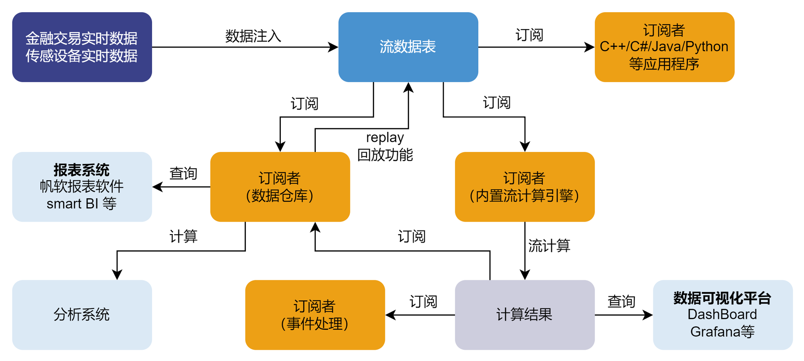

流数据功能架构
基础概念
流数据表
流数据表是 DolphinDB 内部的一种特殊的内存表，用于存储和发布流数据，其被订阅后会把增量数据及时发布给订阅者。
流数据表支持并发读写，但是与普通内存表不同，流数据表不支持修改或删除记录。向流数据表插入一条记录等价于数据源发布一条消息。
流数据表的查询接口与普通内存表一致，可使用 SQL 语句对流数据表进行查询和分析。
发布与订阅
DolphinDB 采用经典的发布订阅（Pub-Sub）模式。
每当有新的流数据注入负责发布消息的流数据表时，会通知所有的订阅方处理新的流数据。
流计算引擎
流数据计算引擎是专门用于处理特定计算场景的内置计算函数，如实时合成 K 线、实时多源关联、实时计算状态指标等。
流数据处理架构介绍
DolphinDB 流数据处理模块采用发布-订阅-消费的模式。流数据首先注入流数据表中，通过流数据表来发布数据。数据节点或者第三方的应用可以通过 DolphinDB 脚本或 API 来订阅及消费流数据。

上图展示了 DolphinDB 的流数据处理框架。外部实时数据注入到发布节点的流数据表后，数据被发布到流数据表的订阅者。一个流数据表可同时将数据发布给多个订阅者，供它们并行消费：
-
流数据表可由数据仓库订阅并保存，作为分析系统与报表系统的数据源。
-
流数据表可由流数据计算引擎订阅，进行计算，并将结果输出到流数据表。计算结果既可以由 Grafana 等平台进行实时展示，也可以作为数据源再次发布，供二次订阅做事件处理。
-
流数据表可通过 API 进行订阅，并提供给第三方应用程序，例如第三方的 Java 应用程序通过 Java API 订阅流数据以进行业务操作。